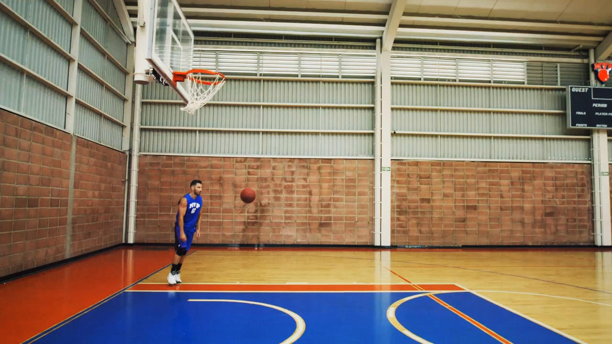
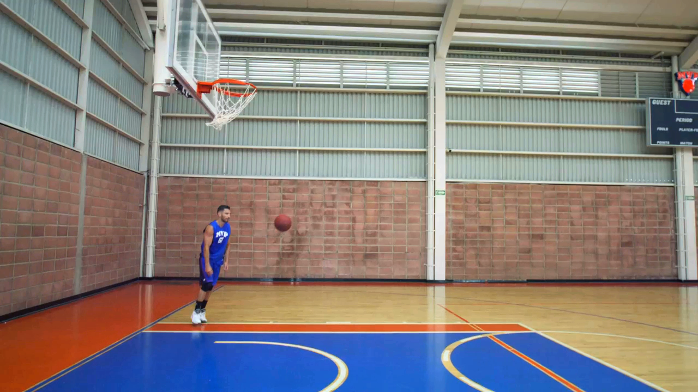
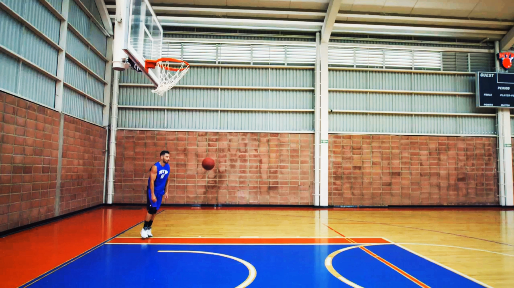
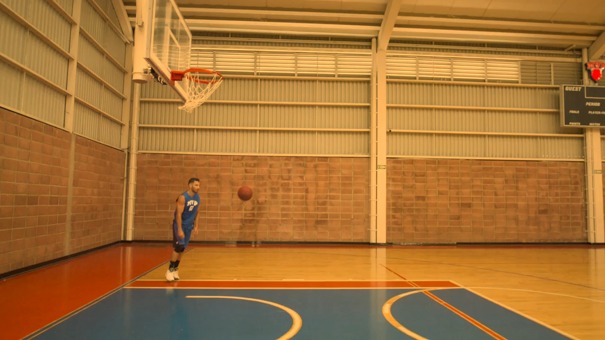
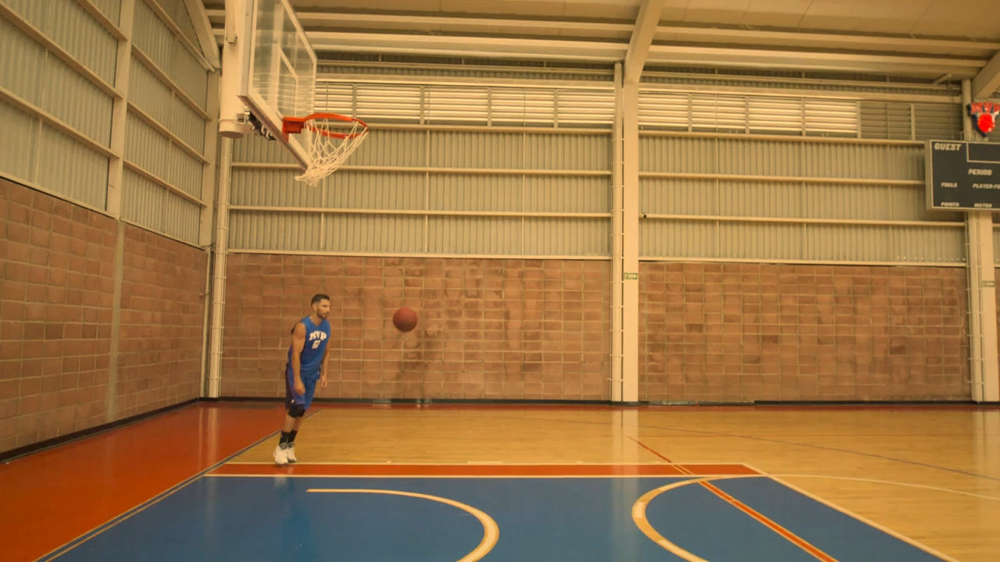
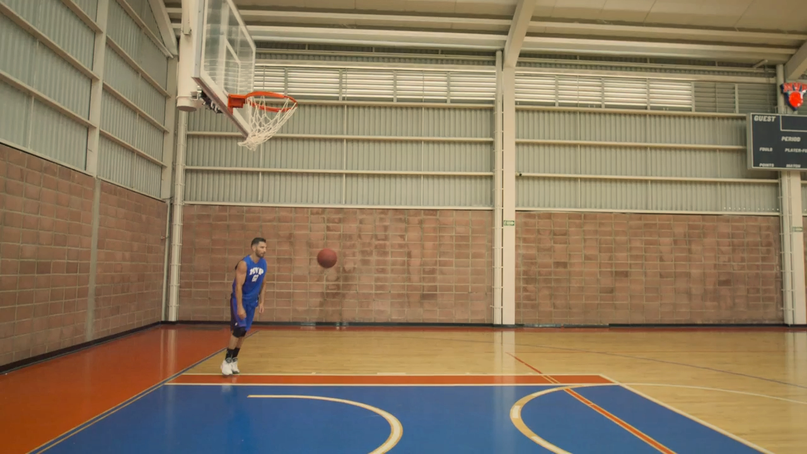
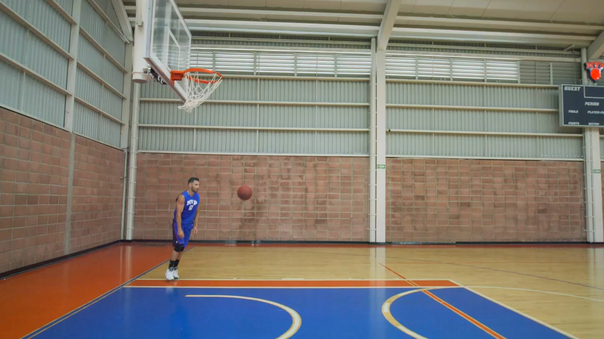
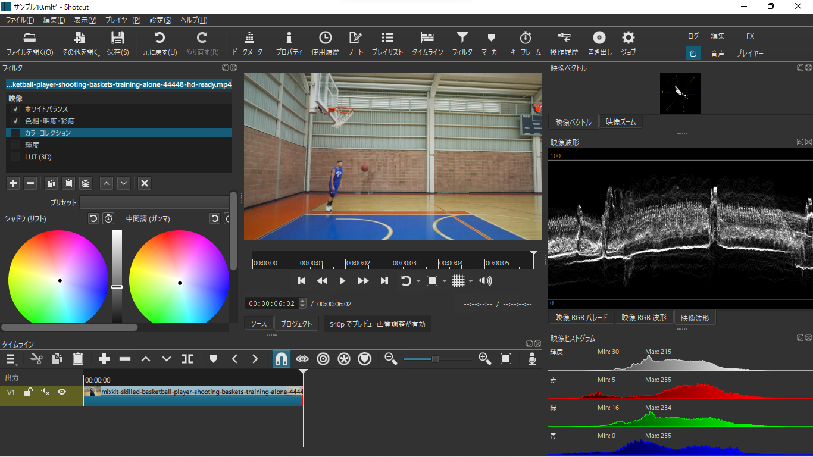
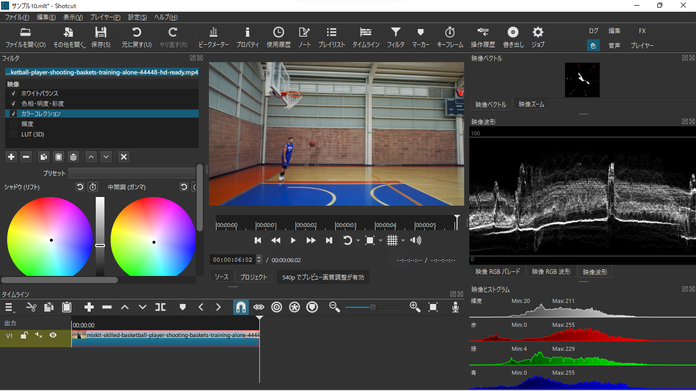
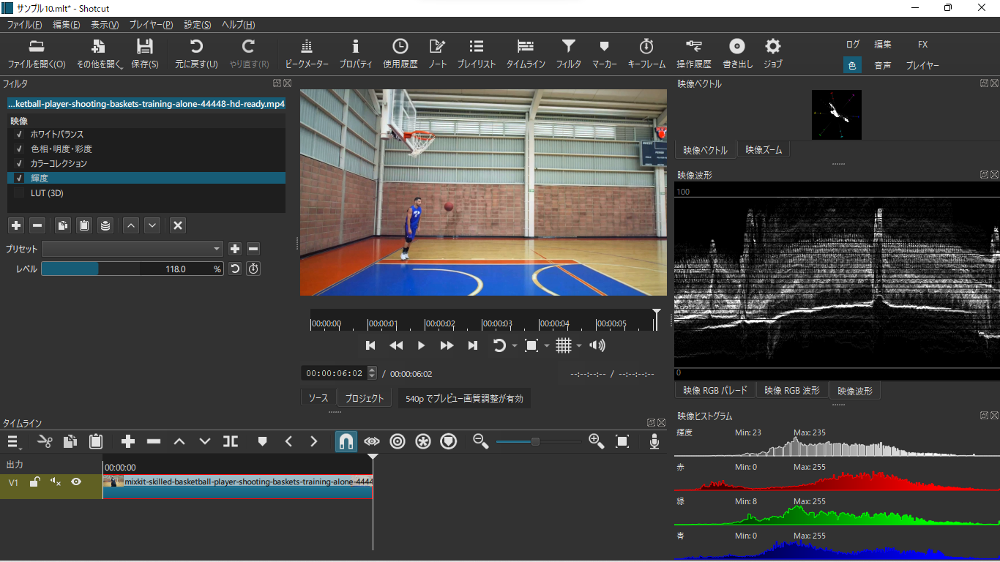

7 カラーグレーディング
7.1 映像の色づくりについて
私たちが普段目にしている映像作品は、ほとんどの場合、カメラで撮影されたそのままの映像ではなく、それぞれのシーンの雰囲気にあうように色を調整したうえで公開されています。
そのシーンの雰囲気にあわせて、映像の色調を調整する作業のことを「カラーグレーディング」といいます。カラーグレーディングは、本格的にやろうとすると専門的な知識が必要であるのにくわえて、Shotcutでやるには不便なため、比較的難しい作業といえるかもしれません。
一方で、手軽にはじめられる範囲では、後で紹介する「LUT（3D）」というフィルタを使うことによって、映像の色調をさまざまに変えることができます。



どのような狙いをもってカラーグレーディングをおこなうかは、その映像作品で目指したいイメージ次第なので、これといった正解はありません。ただ、たとえばYouTubeに投稿するための動画であれば、彩度の低いクールな印象の映像よりも、彩度の高い鮮やかな映像のほうが目立つといった傾向はありそうです。
そこで、ここでは、彩度を不自然にならない範囲で上げつつ、コントラストを高くすることを目指すことにします。このとき、上の画像2のように、いきなりLUTを適用してカラーグレーディングしてもよいのですが、その前に、画像3のような、より「自然に見える」色調に近づけてからLUTを適用することで、画像4のような、より見映えのよい仕上がりにすることができます。
この例のように、カラーグレーディングをするときには、ふつう、一度そのシーンとしてニュートラルな発色になるように色調を調整する「カラーコレクション」という作業をセットでおこないます。ここでは、上の画像で使っているのと同じ動画素材に対して、Shotcut上で簡単にカラーコレクションをおこなってから、カラーグレーディングする例を紹介します。
7.2 映像の色を調整する（カラーコレクション）
7.2.1 ホワイトバランス
Shotcutには、映像の色調を調整することができる複数のフィルタが実装されています。ここでは、そうしたフィルタのなかから、カラーコレクションの目的である「自然に見える」色調を実現することに役立ちそうなものを4つ紹介します。
はじめに紹介する「ホワイトバランス」は、映像の「色温度」を調整したような効果を与えることができるフィルタです。
「色温度」というのは、映像中の無彩色の「白っぽさ」に対応するような値で、低いと映像全体が赤っぽくなり、高いと映像全体が青っぽくなります。フィルタのデフォルトの値は6,500Kです（Shotcutでは色温度の単位は「度」になっていますが、ここでは「K（ケルビン）」としています）。



蛍光灯などの照明器具における色温度の目安としては5,000K程度が「自然に見える」色温度だとされます。ただし、ここでいう「自然に見える」というのは、昼間の自然光の下で見たような色温度であるといった意味です。つまり、これくらいの色温度のもとで白色が（赤っぽくも青白くもない）白に見えるということなのですが、たとえば、夕焼けを映したシーンや夜景を映したシーンなどにおいてもそのような色温度に調整してしまうのはかえって不自然なため、実際には、あくまでそのシーンとして「自然に見える」色温度に調整する必要があります。
ここでは、とりあえず、デフォルト値とほぼ変わらない7,000Kに調整しておきます。
7.2.2 色相・明度・彩度
次に紹介する「色相・明度・彩度」は、映像の色相と明度・彩度をまとめて調整できるフィルタです。
色相については、「色相」という値（角度）を設定することによって、映像の色相を色相環上で回転させることができます。ただし、これはそれほど便利でないので、実際に色味を調整する手段としては下で紹介する「カラーコレクション」を利用したほうがよいでしょう。
明度・彩度については、それぞれの対応する値（パーセント）を設定することで、高くしたり低くしたりできます。

元の映像にもよるものの、大雑把にいうと、彩度は120%くらいに上げてしまうのがおすすめです。明度は高くしても低くしても彩度は下がる関係にあるため、明度も同時にさわる場合には、そのぶんだけ彩度も余分に上げるようにするとよいです。
ここでは、彩度だけを120%に設定しておきます。
7.2.3 カラーコレクション
「カラーコレクション」は、カラーサークルと呼ばれるUIを使って、映像の色調をさまざまに調整することができるフィルタです。クリップに「カラーコレクション」を適用すると、それぞれにかかり方の異なる3つのカラーサークルを操作することができます。それぞれのカラーサークルはRGBの各チャンネルごとにかかり具合を調整できるようになっており、各値を適切に設定することによって、映像の色調をさまざまに調整できます。
もっとも、カラーサークルをマウスで操作して狙い通りの色調を実現するのは難しいだろうと思われるので、実際には大まかな値をキーボードで入力してから、微調整して使うことになるはずです。
3つのカラーサークルは、左にあるものから順に「リフト」「ガンマ」「ゲイン」というかかり方に対応しています。これらはいずれも、RGBの各チャンネルごとに、設定したかかり具合で値をシフトさせるような作用をするもので、ここでかかり方と表現しているのは、そのシフトの方法に相当するものです。
「リフト」「ガンマ」「ゲイン」は、大まかには、次の表にまとめているように作用します（「ハイライト」というのは映像中の明るい部分のこと、「シャドウ」というのは暗い部分のことを意味します）。
| 上げる | 下げる | |
|---|---|---|
| リフト | ハイライトはそのままに、シャドウのほうを明るくする | ハイライトはそのままに、シャドウのほうを暗くする |
| ガンマ | 全体的に明るくする（シャドウのコントラストは上がり、ハイライトのコントラストは下がる） | 全体的に暗くする（シャドウのコントラストは下がり、ハイライトのコントラストは上がる） |
| ゲイン | 全体的にコントラストを上げる（白く飛ぶ箇所が多くなる） | 全体的にコントラストを下げる |
ここでは、この後で紹介する「輝度」というフィルタと組み合わせてコントラストを高めるために、リフトを少し下げて、シャドウを暗くしてみようと思います。この下にあるスクリーンショットでは、レイアウトを色用レイアウトに変更して、映像波形を表示しています（画面の右側中段に表示されているパネル）。

映像波形は、大雑把にいうと、「再生ヘッドがある位置の映像について、横方向に適当に分割しながら、その各列について明るさの分布を描いたグラフ」です。画面内のどのあたりがどれくらい明るいかを大まかに把握するのに使えます。
この映像波形を見ると、白い部分が帯のように連なっていて、その上下に黒い領域があることがわかります。一方で、ここで目指しているような（画面全体にわたって）コントラストが高い映像では、ハイライトとシャドウの明暗差が大きくなるため、理想的には、映像波形で確認できる白い帯のような部分が薄っすらとグラフ全体に広がるようになり、黒い領域は狭まるはずです。
そこで、この下のスクリーンショットでは、リフトを10%から18%ほど下げてみています。上のと比べると、映像波形の白い帯のような部分が少しだけ下に下がっていることがわかります。

7.2.4 輝度
最後に紹介する「輝度」は、映像の輝度を上げたり下げたりできるフィルタです。
ここでいう「輝度」は、画像処理の文脈で使われる度合いで、高くしていくと、シーンとしてのまぶしさのようなものを感じさせる表現になります。
もう少し詳しく知りたい場合は、次の記事を読んでみてください。
「輝度」では、白く飛んだ箇所を暗くしたり、黒くつぶれた箇所を明るくしたりすることはできないので、そうした調整をしたい場合は「色相・明度・彩度」で明度を調整するか、「レベル」などの別のフィルタを使います。
輝度を上げると、直観的には、映像を全体的に明るくすることができるのですが、このとき、もともと明るく見える色と暗く見える色とでは上り幅に差が生じるため、結果的にコントラストが高まることになります。

この上のスクリーンショットでは、ここまでに説明したフィルタとともに、「輝度」を118%に設定して適用しています。映像波形を確認すると、先ほどまでと比べて、白い帯のような部分が薄っすらと上のほうにも広がっていることがわかります。
7.3 LUTを適用する（カラーグレーディング）
7.3.1 LUT（ルックアップテーブル）について
さて、ここまでの説明では、扱っている映像の彩度を不自然にならない範囲で上げつつ、コントラストを高くするようなカラーグレーディングをおこなうために、その前段階として、4つのフィルタを適用しながらカラーコレクションをしてきました。
ここまでに紹介したフィルタを適用した映像は、このページの冒頭で見た、画像3のような状態です。ここから、より鮮やかな印象の映像に仕上げるために、LUT（ルックアップテーブル）を適用して、画像4のような映像にすることにします。
ところで、いま「LUT（ルックアップテーブル）を適用して」と書きましたが、ここでいうLUTというのは、Shotcutに実装されているフィルタのことではありません。実は、LUT（ルックアップテーブル）というのは、ある色空間のなかで任意の範囲にある色を別の色に置き換える用途で使われる「色の対応表」のようなもののことで、実体としてはただのテキストファイルです。
そういった「色の対応表」には、カラーグレーディングのために用いられるもののほかに、プロ向けの機材で撮影された映像の色を補正する用途で用いられるものがありますが、ここでは前者のような対応表を念頭にLUT（ルックアップテーブル）と呼んでいます。この意味でのLUTは、大まかなイメージとしては、スマホの画像編集アプリにおけるフィルタ機能のように利用できるものです。それ自体で細かな調整をすることはできないものの、Shotcutで読み込んでクリップに適用することで、色調をそのLUTが目指す雰囲気のものに手軽に変換することができます。
動画編集ソフトのなかには、テキストファイルとしての3次元LUT（拡張子が.cubeであるファイルなど）それ自体を書き出せるものもありますが、Shotcutにはそのような機能はありません。そのため、ShotcutでLUTを扱うといった場合、既存のLUTを読み込んで映像に適用するという使い方に限定されます。
7.3.2 LUT（3D）
ShotcutでLUTを読み込んでクリップに適用するには、「LUT（3D）」というフィルタを使います。
ここでは「48 FREE Custom LUTs To Enhance Your Log Footage」というWebページで配布されている、Contrail 35.CUBEというLUTを適用してみることにします。このページの「Download the 35 Free LUTs Now」というセクションにある「DOWNLOAD MORE FREE LUTS HERE」と書かれたボタンからRS-35-Free-LUTs.zipというファイルをダウンロードして展開すると、35 Free LUTsというフォルダのなかに、そのLUT（.cubeファイル）が含まれているはずです。
このファイルを「LUT（3D）」で読み込んで適用するには、クリップに「LUT（3D）」フィルタを追加した後、そのメニューのなかにある「開く…」というボタンを押します。すると、ファイルを選択するためのメニューが開くので、そのメニューからContrail 35.CUBEを選択します。なお、このボタンの下にある「補間」という値は、読み込んだ3次元LUTを適用する際に用いられる補間の方法を指定するものです。おそらく下にあるものほど仕上がりがきれいになるはずですが、実際に動画ファイルの書き出しにかかる時間は増えます。
この下の動画は、ここまでに紹介した一連のフィルタを実際に適用した例です。元の状態と比較できるように、動画の上半分については、フィルタを適用する前の映像を表示させています。
元の映像も必ずしも不自然な色調の映像というわけではないのですが、一連のフィルタを適用した後の映像と比べるとくすんだような印象なので、一連のフィルタを適用したことによって、当初の狙い通りに鮮やかな印象の表現にできたことがわかります。